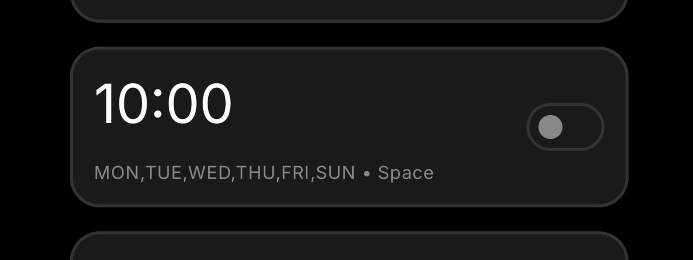
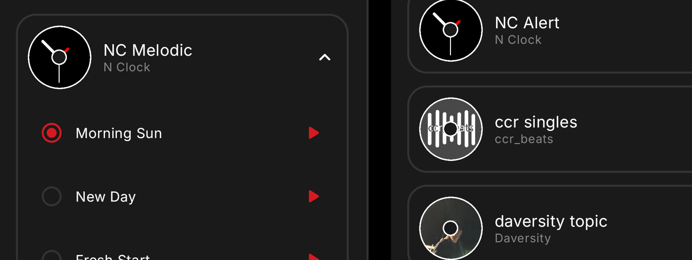
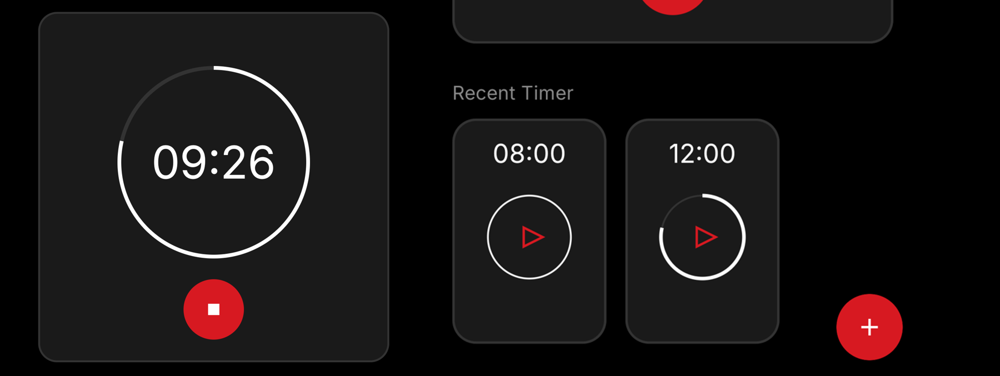
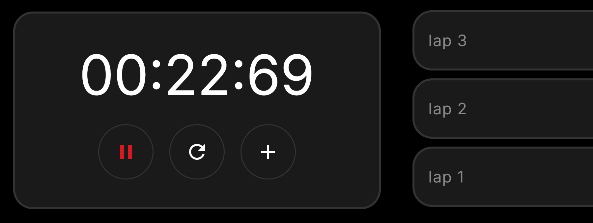
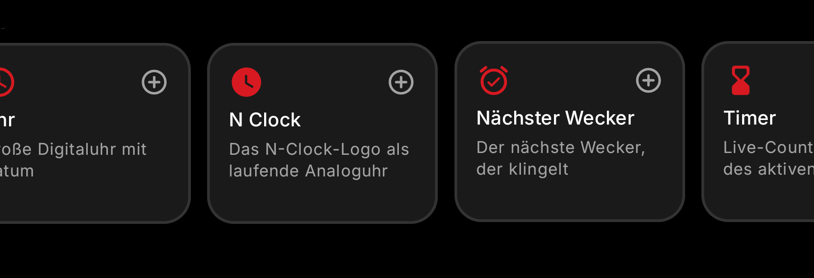
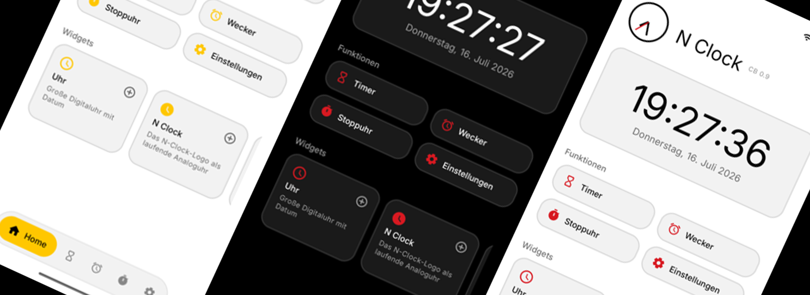

N Clock.
Built for Nothing. Just not by Nothing.
--:--:--
Alarms, timer and stopwatch. No ads. No tracking. Buy it once, it stays yours.
Pre-register on Google PlayAlarms that actually ring.


07:30
Rings in --
- Repeat once, daily or any weekdays
- Own label and sound per alarm
- Five minute snooze, ten minute auto stop
More than 30 alarm sounds.

Albums, artists and cover art, like a music app + every system tone your phone already has.
- Preview any sound with one tap
- 12 extra tracks as a free download pack
Start in one tap.

03:00
Saved timer cards in Recent, Tea and Common.
Stopwatch.

00:00.00
Laps and centiseconds. Keeps counting through app kills and reboots.
Glyph progress.*

On a Nothing Phone, your running timer maps onto the Glyph lights. Face down, you read the time left without unlocking.
Everything at a glance.

Alarms

Sounds

Timer

Stopwatch
Glyph*
Timer on the lights

Widgets

Four themes
Dark, Light, QuintEssential
Private
Offline, no tracking
Android 12 or newer. Questions? Check the FAQ or write to contact@nostream.de.